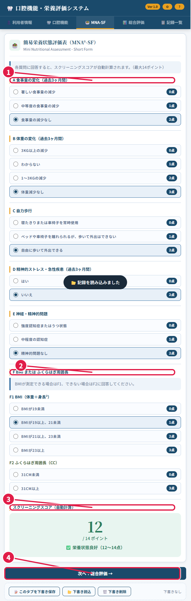

Optimized tool selection統合本文をそのまま出せるように、既存の操作マニュアル末尾だけ補完して、章立てと表現を崩さずにまとめます。出力は Markdown 本文だけにします。
Read [](file://192.168.11.200/%E5%85%A8%E7%A4%BE%E5%85%B1%E6%9C%89/IT/%E3%82%A2%E3%83%97%E3%83%AA%E9%96%8B%E7%99%BA/%E7%A5%9E%E8%B0%B7/kouku-kinou/README.md)
Read [](file://192.168.11.200/%E5%85%A8%E7%A4%BE%E5%85%B1%E6%9C%89/IT/%E3%82%A2%E3%83%97%E3%83%AA%E9%96%8B%E7%99%BA/%E7%A5%9E%E8%B0%B7/kouku-kinou/OPERATIONS_MANUAL_JA.md#233-233), lines 233 to 360
画像リンクと巻末リンクが壊れないように、参照するファイルの存在だけ確認します。これで本文はそのまま一括で出せます。
Read [](file://192.168.11.200/%E5%85%A8%E7%A4%BE%E5%85%B1%E6%9C%89/IT/%E3%82%A2%E3%83%97%E3%83%AA%E9%96%8B%E7%99%BA/%E7%A5%9E%E8%B0%B7/kouku-kinou/assets/manual_beginner)
Searched for files matching **/.env.example, 1 match
Searched for files matching **/TailscaleClientLauncher.ps1, 1 match
Searched for files matching **/TailscaleClientLauncher.cmd, 1 match
Searched for files matching **/TailscaleClientLauncher.settings.json, 1 match
この章で分かること: この資料 1 冊で、現場スタッフの入力作業から、管理者の更新確認と本番反映までの流れを確認できます。前半は利用者向け、後半は管理者向けです。
このマニュアルで扱う主な内容は次のとおりです。
この資料は、日常運用に必要な内容へ整理し直したものです。詳しい背景資料や個別手順書は巻末の関連資料にまとめています。
この章で分かること: このシステムがどこで動いているか、利用者がどの経路でアクセスするか、管理者が何を管理するかを把握できます。
このシステムは、Synology NAS 上の Docker コンテナで動く口腔機能・栄養評価システムです。利用者は Tailscale に接続したうえで、HTTPS の公開 URL からアクセスします。
運用の基本構成は次のとおりです。
画面の元になる HTML は index.html にあり、配信時には server.py が中の本体 HTML を取り出し、保存処理を SQLite API に差し替えて公開します。これにより、レイアウトを大きく変えずに、複数端末で記録を共有できます。
この構成では、DSM のリバースプロキシ、独自ドメイン、ポート開放は前提にしていません。
この章で分かること: 利用者と管理者のどちらにも共通する前提条件と、入力前に知っておくべきルールが分かります。
利用前に、次の点を確認してください。
Tailscale 接続が前提です。 何をするか: 先に Tailscale を接続します。 どこを見るか: Tailscale アプリの接続状態です。 注意点: 未接続のままではアプリを開けないことがあります。
開く URL は管理者が案内した正式 URL を使います。 何をするか: ブラウザーで正式 URL を開きます。 どこを見るか: URL 欄です。 注意点: 通常運用では https://diskstation.tail632bc4.ts.net/ を使います。
利用者は 氏名 + 生年月日 で見分けます。 何をするか: 入力時に氏名と生年月日を正しく入れます。 どこを見るか: 利用者情報画面の氏名欄と生年月日欄です。 注意点: 生年月日がないと保存できません。
同じ利用者の同じ評価日は上書き更新になります。 何をするか: 修正して保存し直します。 どこを見るか: 評価日と利用者情報です。 注意点: 前の内容を別記録で残したい場合は、評価日を変えます。
評価日が違えば履歴として別記録になります。 何をするか: 履歴として残したい日は別の日付で保存します。 どこを見るか: 評価日欄です。 注意点: 保存後は記録一覧で履歴として検索できます。
記録一覧では氏名、ふりがな、生年月日、評価日で検索できます。 何をするか: 探したい情報の一部を入力します。 どこを見るか: 記録一覧の検索欄です。 注意点: 一部分だけでも検索できます。
ここだけ覚えれば大丈夫: 先に Tailscale をつなぎ、正式 URL を開き、氏名と生年月日を正しく入れて保存します。
この章で分かること: 初めて使う人でも、最短の流れで入力と保存まで進めます。
日常運用の基本は次の 4 手順です。
作業を始める前に確認することは次の 3 つです。
作業が終わったら確認することは次の 2 つです。
ここだけ覚えれば大丈夫: つなぐ、入力する、保存する。この順で進めれば大きく迷いません。
この章で分かること: 実際の画面に沿って、アプリを開くところから保存までを順番に進められます。
Tailscale をつなぎます。 何をするか: Tailscale の起動ツール、または Tailscale アプリを開いて接続します。 どこを見るか: Tailscale の接続状態です。 注意点: 初回だけ管理者から案内されたアカウントでサインインします。
アプリを開きます。 何をするか: ブラウザーでアプリ URL を開きます。 どこを見るか: URL 欄です。 注意点: 管理者から案内された URL 以外は開かないでください。
最初の画面を確認します。 何をするか: 画面上部のタブを見て、どの画面に移動できるか確認します。 どこを見るか: 利用者情報、口腔機能、MNA-SF、総合評価、記録一覧のタブです。 注意点: 迷ったら、利用者情報から順番に入力します。
!アプリを開いた直後の画面
画像の見方:
利用者情報の画面を開きます。 何をするか: 氏名、生年月日、担当者などの基本情報を入力する画面を開きます。 どこを見るか: 利用者情報タブです。 注意点: 最初に開いたときはこの画面が表示されることが多いです。
基本情報を入力します。 何をするか: ふりがな、氏名、生年月日、必要に応じて体重、身長、担当者、かかりつけ医を入力します。 どこを見るか: 氏名欄、生年月日欄、担当者欄、かかりつけ医欄です。 注意点: 生年月日は必ず入れてください。BMI は体重と身長を入れると自動で出ます。
次の画面へ進みます。 何をするか: 口腔機能評価へ移動します。 どこを見るか: 次へ: 口腔機能評価 のボタンです。 注意点: 氏名と生年月日が正しいかを確認してから進みます。
!利用者情報入力画面
画像の見方:
上の質問項目から順番に入力します。 何をするか: 問診や観察の結果を、上から順に選択します。 どこを見るか: 各質問の右にある選択欄です。 注意点: 最初から全部を理解しようとせず、上から順に入れるだけで大丈夫です。
測定や確認の欄を入力します。 何をするか: RSST、ブクブクうがい、発音回数などを入力します。 どこを見るか: 数字欄や選択欄です。 注意点: その場で分からない項目は、測定後に戻って入力してかまいません。
口腔の総合評価を入力します。 何をするか: 継続の必要性や備考を入力します。 どこを見るか: 画面の下の方の総合評価欄です。 注意点: 画面が長いため、一番下までスクロールして確認します。
MNA-SF へ進みます。 何をするか: 栄養評価へ移動します。 どこを見るか: 次へ: MNA-SF のボタンです。 注意点: 入力漏れがないかを下まで見てから進みます。
!口腔機能評価入力画面
画像の見方:
A から E まで答えます。 何をするか: 栄養状態を確認する各質問に答えます。 どこを見るか: それぞれの質問の選択肢です。 注意点: 1 問につき 1 つだけ選びます。
F を答えます。 何をするか: BMI またはふくらはぎ周囲長を使う項目を選びます。 どこを見るか: F1 または F2 の選択肢です。 注意点: BMI が分かるなら F1、分からないときだけ F2 を使います。両方は入れません。
点数と結果を確認します。 何をするか: 自動計算された合計点と判定を見ます。 どこを見るか: 画面下の点数表示です。 注意点: 途中で答えていない項目があると、結果が正しく出ません。
総合評価へ進みます。 何をするか: 保存前の確認画面へ移動します。 どこを見るか: 次へ: 総合評価 のボタンです。 注意点: 点数が表示されていることを確認してから進みます。

画像の見方:
総合評価の画面で内容を確認します。 何をするか: 入力した内容とコメント欄、次回モニタリング予定日を確認します。 どこを見るか: 総合評価タブです。 注意点: 保存前に利用者名と評価日が正しいかを確認します。
記録を保存します。 何をするか: 入力した内容をサーバーへ保存します。 どこを見るか: 記録を保存 のボタンです。 注意点: 保存が終わる前に画面を閉じないでください。
次の利用者を入力するときだけ新規入力を使います。 何をするか: 入力内容を空にして、別の利用者の入力を始めます。 どこを見るか: 新規入力 のボタンです。 注意点: 保存前に押すと今の入力内容が消えます。必ず先に保存してください。
!保存ボタン周辺
画像の見方:
ここだけ覚えれば大丈夫: 画面を閉じる前に、必ず保存します。氏名、生年月日、評価日の確認を忘れないでください。
この章で分かること: 保存した記録がどのように扱われるか、重複や履歴のルールが分かります。
このシステムの保存ルールは次のとおりです。
利用者は 氏名 + 生年月日 で識別します。 何をするか: 氏名と生年月日を正確に入力します。 どこを見るか: 利用者情報画面です。 注意点: 氏名だけでは同姓同名を区別できません。
同じ利用者の同じ評価日は上書き更新になります。 何をするか: 修正したい内容を直して保存し直します。 どこを見るか: 評価日欄と保存ボタンです。 注意点: 新規追加ではなく更新になります。
同じ利用者でも評価日が違えば履歴として別記録になります。 何をするか: 別の評価として残したい場合は評価日を変えます。 どこを見るか: 評価日欄です。 注意点: 同じ人の経過を残したいときに使います。
記録はサーバー側の SQLite に保存されます。 何をするか: 同じ URL からアクセスして利用します。 どこを見るか: 利用している URL と画面内容です。 注意点: 同じ NAS 上の単一 DB を使うため、PC とタブレットで同じ記録を参照できます。
共用 PC では作業後にブラウザーを閉じます。 何をするか: 操作終了後にブラウザーを閉じます。 どこを見るか: ブラウザーの閉じるボタンです。 注意点: 共用 PC に画面を開いたままにしないでください。
ここだけ覚えれば大丈夫: 同じ人の同じ日付は更新、違う日付は履歴です。共有記録なので、同じ URL を使ってください。
この章で分かること: 保存済みの記録を検索し、必要な記録を読み込み直す方法が分かります。
記録一覧を開きます。 何をするか: 保存した記録を探す画面を開きます。 どこを見るか: 記録一覧タブです。 注意点: 過去の記録を探すときは、まずこの画面を開きます。
検索します。 何をするか: 記録を絞り込みます。 どこを見るか: 一覧上部の検索欄です。 注意点: 氏名、ふりがな、生年月日、評価日のどれかを入れると検索できます。一部分だけでも使えます。
記録を読み込みます。 何をするか: 過去の記録を現在の画面へ戻します。 どこを見るか: 最新を読込 または 読込 のボタンです。 注意点: 読み込んだあとに修正して保存すると、同じ利用者の同じ評価日は上書き更新になります。
!記録一覧と検索欄
画像の見方:
ここだけ覚えれば大丈夫: 探す、読む、直す、保存する、の順で使います。
この章で分かること: 画面に表示している 1 名分の記録を、印刷または PDF として出力する方法が分かります。
総合評価の画面を開きます。 何をするか: 保存や印刷を行う画面を開きます。 どこを見るか: 総合評価タブです。 注意点: 印刷されるのは、今表示している 1 名分だけです。
印刷方法を選びます。 何をするか: 1 枚サマリーか詳細ページかを選びます。 どこを見るか: 印刷方法の欄です。 注意点: 迷ったら 1名サマリー A4 1枚 を選びます。
印刷または PDF 出力を行います。 何をするか: ブラウザーの印刷画面を開きます。 どこを見るか: 印刷 / PDF出力 のボタンです。 注意点: PDF にしたいときは、印刷先で PDF に保存 または Microsoft Print to PDF を選びます。表示名は PC によって少し異なります。
!印刷画面または印刷ボタン周辺
画像の見方:
ここだけ覚えれば大丈夫: PDF にするときも、まずは 印刷 / PDF出力 を押します。
この章で分かること: 利用者がつまずきやすいポイントと、最初に確認すべき対処が分かります。
考えられる原因は次のとおりです。
対処は次の順で行います。
考えられる原因は次のとおりです。
対処は次の順で行います。
考えられる原因は次のとおりです。
対処は次のとおりです。
考えられる原因は次のとおりです。
対処は次の順で行います。
ここだけ覚えれば大丈夫: 開けないときは Tailscale と URL、保存できないときは生年月日と入力漏れを先に確認します。
この章で分かること: 管理者が日常的に見るべき流れと、更新作業の全体像が分かります。
管理者の主な役割は次のとおりです。
認証の既定運用は tailscale-or-password です。この設定では、Tailscale の HTTPS URL から来た利用者はヘッダーで自動認証され、必要な場合だけ管理者用パスワードの入口を使います。
運用の大きな流れは次の 5 段階です。
この章で分かること: 管理者が日常的に確認する項目と、設定画面で行う候補管理の手順が分かります。
本番 URL にアクセスできる 何をするか: ブラウザーで本番 URL を開きます。 どこを見るか: 画面が正常に表示されるかです。 注意点: Tailscale 接続後に確認します。
保存と記録一覧が使える 何をするか: ログイン、保存、記録一覧の表示を確認します。 どこを見るか: 記録を保存 ボタンと記録一覧です。 注意点: 反映作業後は必ず確認します。
ヘルスチェックが通る 何をするか: /api/health を確認します。 どこを見るか: http://localhost:8010/api/health または本番経由の確認結果です。 注意点: Docker の状態確認とあわせて見ます。
設定を開きます。 何をするか: 候補一覧を管理する画面を開きます。 どこを見るか: 右上の歯車です。 注意点: この画面は主に管理者向けです。
担当者を追加します。 何をするか: 利用者情報画面で選べる担当者候補を追加します。 どこを見るか: 担当者名を追加 の欄と追加ボタンです。 注意点: 追加すると、利用者情報画面の担当者プルダウンへすぐ反映されます。
かかりつけ医を追加します。 何をするか: かかりつけ医候補を追加します。 どこを見るか: かかりつけ医を追加 の欄と追加ボタンです。 注意点: ここで追加した候補も利用者情報画面へすぐ反映されます。
不要な候補を削除します。 何をするか: 候補を整理します。 どこを見るか: 各候補の削除ボタンです。 注意点: 削除すると他の端末でも候補が消えるため、操作前に確認してください。
!設定画面
画像の見方:
必要に応じて、server.py をローカルで起動して画面確認を行います。実運用の環境設定ファイルがある場合は、起動時に自動で読み込みます。
PowerShell 例:
python server.py --auth-mode password --host 127.0.0.1 --port 8010
画面確認だけを優先したい場合:
python server.py --no-auth --host 127.0.0.1 --port 8010
確認先:
http://localhost:8010/
http://localhost:8010/api/health
確認用サンプルを入れたいとき:
python seed_sample_records.py
既存データを消して入れ直すとき:
python seed_sample_records.py --replace
この章で分かること: Windows 利用者とタブレット利用者に、何をどのように案内するとよいかが分かります。
Windows 利用者には、次の 3 ファイルをまとめて配布できます。
配布時の確認事項は次のとおりです。
タブレット利用者には、ファイル配布より次の 2 点を案内するほうが簡単です。
配布時の注意点は次のとおりです。
この章で分かること: 新しい index.html を受け取ったときに、どの順番で確認し、どの条件で受け入れるかが分かります。
この作業では、受け取った HTML をいきなり本番用の index.html に上書きしないことが最重要です。
受け取った HTML は別名で保存します。 何をするか: まず別ファイル名で保存します。 どこを見るか: 保存先とファイル名です。 注意点: いきなり index.html を上書きしません。
検証コマンドを実行します。 何をするか: server.py の検証機能で受け入れ可否を確認します。 どこを見るか: PowerShell の実行結果です。 注意点: 検証に通ったときだけ次へ進みます。
PowerShell 例:
& "C:\Users\user\AppData\Local\Microsoft\WindowsApps\python.exe" server.py --validate-client-html "C:\path\to\index_new.html"
次のどちらかが出たときだけ受け入れます。
Client HTML validation: OK (managed) 何を意味するか: Claude 生成済みの完成版 HTML として受け入れてよい状態です。
Client HTML validation: OK (legacy-source) 何を意味するか: 旧来の変換前 HTML として受け入れてよい状態です。
次のものは受け入れません。
検証に通ったファイルだけを使います。 何をするか: 受け入れ可の HTML を確認します。 どこを見るか: 検証結果です。 注意点: 不合格の HTML では進めません。
本番用の index.html と差し替えます。 何をするか: 検証済みの内容で index.html を置き換えます。 どこを見るか: 置換対象のファイルです。 注意点: 差し替え後は次章の GitHub 反映へ進みます。
失敗時は差し戻します。 何をするか: 検証結果が失敗なら作業を止めます。 どこを見るか: 検証結果のメッセージです。 注意点: 失敗した HTML は置き換えず、作成者へ差し戻します。
この章で分かること: 検証済みの更新を GitHub へ反映し、本番画面で確認完了にするまでの流れが分かります。
本番反映は次の順で行います。
index.html を差し替えた内容を main に commit するか、Pull Request を main へ merge します。 何をするか: GitHub に反映します。 どこを見るか: 反映対象のブランチです。 注意点: 本番反映は main を基準に進めます。
GitHub Actions の Deploy to Synology を確認します。 何をするか: デプロイ処理が成功したかを見ます。 どこを見るか: Actions の結果です。 注意点: 成功を確認するまで反映完了としません。
本番 URL を開いて動作確認します。 何をするか: ログイン、保存、記録一覧の表示を確認します。 どこを見るか: 本番画面です。 注意点: 更新後は必ず画面で確認します。
問題があれば検証手順へ戻ります。 何をするか: 受け取った HTML の内容と検証結果を見直します。 どこを見るか: index.html と検証結果です。 注意点: Actions または本番確認が通るまで完了扱いにしません。
本番確認で最低限見る項目は次の 3 つです。
この章で分かること: 管理者が Synology、Docker、Tailscale まわりで確認すべき設定とコマンドが分かります。
実運用では、Git 管理対象外の環境設定ファイルを各環境に配置して使います。ひな形は .env.example です。
主な環境変数は次のとおりです。
KOUKU_KINOU_AUTH_MODE 内容: password / tailscale / tailscale-or-password 注意点: Tailscale 運用向けの既定値は tailscale-or-password です。
KOUKU_KINOU_PASSWORD 内容: 管理者用パスワード 注意点: tailscale-or-password の予備入口として使います。
KOUKU_KINOU_SESSION_TTL_MINUTES 内容: パスワードログイン時のセッション有効時間 注意点: 既定は 480 分です。
KOUKU_KINOU_SECURE_COOKIE 内容: 1 で Secure Cookie を有効化 注意点: Tailscale HTTPS では 1 を維持します。
KOUKU_KINOU_ALLOWED_NETWORKS 内容: 追加の IP 制限 注意点: 必要な場合だけ使います。
KOUKU_KINOU_TRUST_PROXY 内容: X-Forwarded-For ベースの制御 注意点: 必要なときだけ 1 にします。
設定例:
KOUKU_KINOU_AUTH_MODE=tailscale-or-password
KOUKU_KINOU_PASSWORD=change-this-admin-password
KOUKU_KINOU_SESSION_TTL_MINUTES=480
KOUKU_KINOU_SECURE_COOKIE=1
KOUKU_KINOU_ALLOWED_NETWORKS=
KOUKU_KINOU_TRUST_PROXY=0
実行例:
docker compose up --build -d
docker compose ps
状態を確認します。 何をするか: コンテナの状態を見ます。 どこを見るか: docker compose ps の STATUS です。 注意点: healthy になれば /api/health まで含めて通っています。
compose.yaml の役割を確認します。 何をするか: 公開方法を理解します。 どこを見るか: ポート設定と healthcheck です。 注意点: loopback のみに bind するため、Tailscale Serve を通らない直接アクセスを減らせます。
Synology で SSH を有効にします。 何をするか: DSM で SSH を有効化します。 どこを見るか: DSM の設定画面です。 注意点: Tailscale Serve 設定時に必要です。
root 権限で Tailscale Serve を設定します。 何をするか: Synology 上で Tailscale Serve を設定します。 どこを見るか: serve status の結果です。 注意点: 初回は HTTPS 有効化の承認画面が開くことがあります。
実行例:
tailscale serve --bg 8010
tailscale serve status
tailscale コマンドが見つからない場合:
/var/packages/Tailscale/target/bin/tailscale serve --bg 8010
/var/packages/Tailscale/target/bin/tailscale serve status
この章で分かること: どこで問題が起きているかを、利用者側、アプリ側、更新作業側、インフラ側に分けて見られます。
この章で分かること: このマニュアルで扱いきれない個別資料や補助資料がどこにあるか分かります。
関連資料は次のとおりです。
この章で分かること: このマニュアルが、どの資料のどの要点を統合しているかを確認できます。